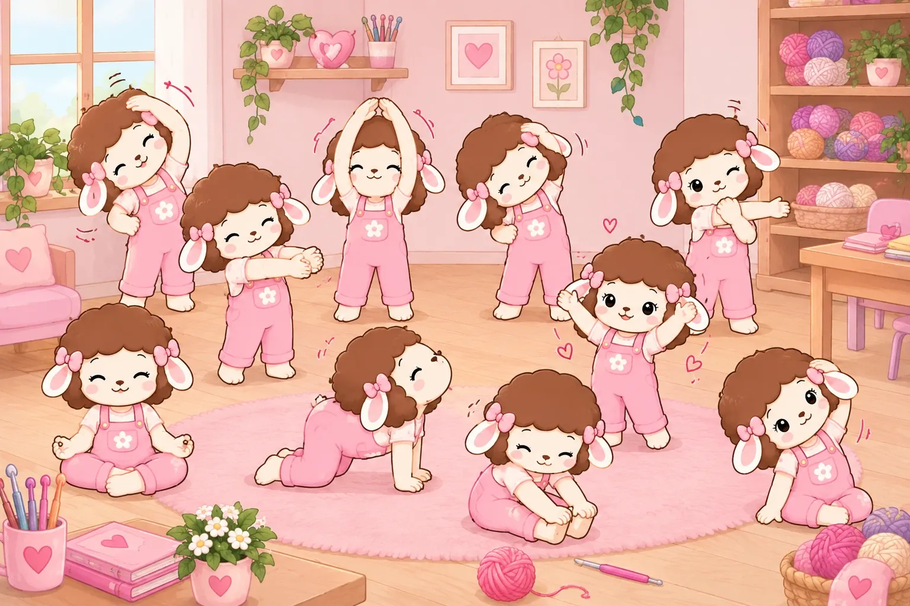

Consejos, cuidados y aprendizajes que nacen en nuestro taller, para que tus amigurumis duren más y disfrutes cada puntada.
Muy pronto vamos a publicar artículos en esta categoría. Mientras tanto, .
Regalos · Septiembre 2026
Amigurumi de tu mascota: cómo lo tejemos y qué detalles podemos incluir
Las mascotas son de la familia, y también se pueden tejer. Tomamos la foto de tu perro, tu gato o tu ave y la convertimos en un amigurumi hecho a mano, con lo que la hace única. Así funciona.
1. Empieza con las fotos
Nos envías fotos claras de tu mascota, de cuerpo entero y de cerca de la cara. Si tienes dudas de cuáles elegir, mira la guía de qué fotos enviar.
2. Cuéntanos sus detalles
Lo que la distingue es lo que más se nota en el tejido. Estos son los detalles que solemos incluir:
Manchas y colores: el pelaje, las manchas y el color de los ojos.
Forma de las orejas: paradas, caídas o de otra forma.
Accesorios: el collar, la placa con su nombre o una pañoleta, como la del llavero de Luk.
Su personalidad: si tienes una anécdota o una postura que la caracteriza, cuéntanosla.
3. Elige el formato
Puede ser un amigurumi, un peluche o un llavero. Los amigurumis van desde $70.000 COP, los peluches desde $35.000 COP y los llaveros desde $12.000 COP, según el tamaño y el detalle.
4. Cotización, fecha y tejido
Con las fotos y tus indicaciones te enviamos la cotización. Al aprobarla te damos la fecha de entrega, y desde ahí lo tejemos a mano. Tu pedido llega en un empaque hecho a la medida y con una tarjeta con mensaje personalizado.
Un recuerdo para abrazar
Algunas familias lo piden como regalo y otras para tener siempre cerca a un compañero muy querido. Mira el llavero de Luk, un perrito que siempre van a recordar, en Historias que tejimos.
Qué fotos enviar para que tu amigurumi personalizado quede idéntico
La foto es el punto de partida de cada amigurumi personalizado. Entre más clara sea, más detalles podemos llevar al tejido. Estos consejos te ayudan a elegir bien antes de enviarla.
1. Una foto de cuerpo entero
Lo ideal es que se vea la persona o la mascota completa, de frente y de pie. Así vemos la ropa, los zapatos y las proporciones.
2. Buena luz, sin filtros
La luz natural cerca de una ventana es la mejor. Evita los filtros y las fotos muy oscuras: cambian los colores del cabello, la piel y la ropa.
3. Una foto de cerca de la cara
Si puedes, envía también una foto del rostro: nos ayuda con el peinado, las gafas, la barba o los accesorios.
4. Los detalles que no pueden faltar
Ropa y accesorios: la camiseta favorita, el sombrero, el collar o la pañoleta.
Colores exactos: si la foto no los muestra bien, cuéntanos cuáles son.
En mascotas: manchas, color de ojos, forma de las orejas y su collar o placa con el nombre.
5. Varias personas o mascotas
Si es una pareja o una familia, envía una foto de cada uno. No hace falta que estén juntos en la misma foto.
¿No tienes la foto perfecta? No te preocupes: con las fotos que tengas y lo que nos cuentes, te decimos qué podemos hacer antes de cotizar.
Cómo empezar a tejer crochet desde cero: guía para principiantes
Si siempre has querido aprender a tejer pero no sabes por dónde empezar, esta guía es para ti. No necesitas experiencia ni tecnicismos: con un hilo, una aguja y un poco de paciencia puedes tener tu primera pieza en pocos días.
Lo que necesitas para empezar
Un hilo de grosor medio y de color claro. Así ves bien cada punto. Evita las lanas peludas o muy oscuras al principio.
Una aguja de crochet del número que recomienda la etiqueta del hilo.
Unas tijeras pequeñas y una aguja lanera para cortar y esconder las hebras.
Si quieres tener todo a la mano, revisa la checklist de Rosina o consulta los materiales en nuestra mercería.
Tus primeros puntos, en este orden
Agarrar la aguja y el hilo, y hacer la cadeneta. Es la base de casi todo.
El punto bajo. Es el punto más usado, sobre todo en amigurumis. Practícalo hasta que te salga parejo. Mira el tutorial ↗
¿Prefieres aprender acompañada? En nuestro taller Desconecta para Conectar, en Manizales / Villamaría, aprendes desde cero en 3 horas, con kit de materiales y refrigerio incluidos. Conoce Lana Rosa Academy →
— Rosina 🐑 y el equipo de Lana Rosa
Crochet · Septiembre 2026
Qué materiales necesitas para tejer tu primer amigurumi
Un amigurumi es un muñeco tejido a crochet, casi siempre en punto bajo y en espiral. La buena noticia: no necesitas muchos materiales para empezar. Esta es la lista que Rosina revisa antes de cada proyecto.
🧶 Materiales
Hilo de algodón o acrílico de grosor medio, en un color claro para ver bien cada punto. Evita las lanas peludas para empezar.
Aguja de crochet de 2,5 a 3,5 mm. Usa medio número menos de lo que dice la etiqueta del hilo, para que el tejido quede apretado y no se vea el relleno.
Relleno de fibra siliconada (guata). Con una bolsa pequeña te alcanza para varios muñecos.
Ojos de seguridad con su arandela, o hilo negro para bordarlos.
Aguja lanera de punta roma, para coser las piezas y esconder las hebras.
✂️ Herramientas
Marcador de puntos. Sirve un clip o un trocito de hilo de otro color: te dice dónde empieza cada vuelta.
Tijeras pequeñas y bien afiladas.
Alfileres de cabeza para ubicar las piezas antes de coserlas.
Un patrón sencillo: una pelotita, un pollito o una ballena. Piezas redondas y pocas partes.
¿Cuánto hilo necesito?
Depende del tamaño y del grosor del hilo. Para saberlo, usa la calculadora de lana de Rosina: le das las medidas de tu pieza y te dice cuántos gramos vas a necesitar.
💡 Tip de Rosina: si tu amigurumi es para un bebé o un niño menor de 3 años, borda los ojos con hilo en lugar de usar ojos de seguridad. Así no hay piezas pequeñas que se puedan soltar.
Cómo pedir un amigurumi personalizado a partir de una foto
Un amigurumi personalizado es un muñeco tejido a mano que se parece a alguien especial: una persona, tu mascota, una pareja o un personaje que amas. Así funciona el pedido en Lana Rosa, paso a paso.
1. Elige la foto
Envíanos fotos claras de la persona, mascota o personaje. Lo ideal es que se vea de cuerpo entero y de frente, con buena luz. Cuéntanos también los detalles que no pueden faltar: la ropa, las gafas, el peinado, los accesorios y los colores.
2. Elige el tamaño
Amigurumis: 10, 13, 15 o 20 cm.
Llaveros: de 4 a 6 cm.
Peluches: de 12 a 32 cm.
3. Recibe tu cotización
Nuestros amigurumis personalizados parten desde $70.000 COP y los llaveros personalizados desde $12.000 COP. El precio final depende del tamaño, la complejidad y el nivel de detalle, y te lo confirmamos antes de empezar. Incluye el tejido a mano, un empaque hecho a la medida y una tarjeta con mensaje personalizado. Mira más en Precios.
4. Confirma y lo tejemos
Cuando apruebas la cotización, empezamos a tejer. El tiempo de elaboración depende del tamaño, la complejidad y la fila de pedidos: te confirmamos la fecha estimada al aprobar tu cotización. Puedes pagar por Nequi o Bre-B.
5. Lo recibes
Enviamos a toda Colombia desde nuestro taller en Villamaría, Caldas, junto a Manizales. El valor del envío se calcula según la ciudad de destino.
Cuando el tejido está bueno, se nos pasan las horas sin darnos cuenta… y el cuello, los hombros y las manos lo sienten. Rosina te propone esta rutina corta para hacer cada 45 a 60 minutos de tejido: toma menos de 5 minutos y tu cuerpo te lo va a agradecer.

1223456789
Busca a Rosina con el número de cada ejercicio.
1
Respira. Siéntate cómoda, cierra los ojos y respira profundo por la nariz 5 veces, soltando el aire despacio por la boca.
2
Cuello. Pon una mano sobre la cabeza e inclina la oreja hacia el hombro, sin forzar. Sostén 15 segundos y cambia de lado. Puedes hacerlo de pie o sentada.
3
Espalda y piernas. Sentada en el piso con las piernas estiradas, lleva las manos hacia los tobillos o los pies, hasta donde llegues cómoda. Sostén 15 segundos.
4
El gato. En cuatro apoyos, lleva la mirada hacia arriba arqueando la espalda y luego redondéala mirando hacia el ombligo. Repite 5 veces, despacio.
5
Hacia el cielo. De pie, une las manos sobre la cabeza y estírate hacia arriba como si quisieras tocar el techo. Sostén 10 segundos.
6
Inclinación lateral. Lleva un brazo por encima de la cabeza e inclina el cuerpo hacia el lado contrario. Sostén 10 segundos y cambia de lado.
7
Hombros. Cruza un brazo por delante del pecho y sostenlo con la otra mano, sin subir los hombros. 15 segundos por lado.
8
Manos y muñecas. Estira los brazos al frente, entrelaza los dedos y empuja suavemente las palmas hacia afuera. Tus manos trabajan mucho al tejer: ¡consiéntelas!
9
¡Celebra! Sube los brazos, sacude suavemente las manos y sonríe. Ya estás lista para volver a tu tejido.
💡 Muévete despacio, sin rebotar y sin llegar al dolor. Si tienes alguna lesión o molestia, consulta primero con un profesional de la salud.
5 ideas de regalos personalizados que sí van a sorprender
Sabemos lo difícil que es encontrar un regalo que no se sienta genérico. Aquí van cinco ideas que nos han pedido una y otra vez, y que siempre funcionan:
El amigurumi de la mascota. Con su color exacto, su collar, hasta esa manchita en la oreja — es de los regalos que más emocionan.
Tú, pero tejida. Para regalarle a alguien una versión en lana de sí misma, con su ropa favorita y sus gafas.
La pareja en miniatura. Dos amigurumis personalizados, uno de cada quien, para aniversarios o bodas.
El recuerdo de un momento. Un amigurumi basado en una foto de un viaje, una graduación, o cualquier fecha que quieras congelar en el tiempo.
El regalo con mensaje. Cualquiera de los anteriores, con una tarjeta con lo que quieras decirle a esa persona.
Todos empiezan igual: nos cuentas la idea, nos mandas una foto de referencia si aplica, y nosotras nos encargamos del resto.
Por qué tejer se está volviendo la forma favorita de desconectar
No es casualidad que cada vez más personas nos escriban preguntando dónde pueden aprender a tejer. Después de un taller, casi todas dicen lo mismo: "no pensé que se me iba a olvidar el celular por tres horas".
Tejer obliga a tus manos y a tu cabeza a estar en el mismo lugar — no hay espacio para pensar en el trabajo, en el chat, ni en la lista de pendientes. Solo el hilo, la aguja, y el siguiente punto.
Por eso nuestro primer taller presencial se llama "Desconecta para Conectar": conectar contigo misma, con tus manos, y con la satisfacción de terminar algo tangible en una sola tarde.